Text Mining in Accounting
NSYSU | IB521 | Fall 2024
Outline
- Introduction to Text Mining
- Preprocessing Textual Data
- Tokenization
- Filtering
- Lemmatization
- Stemming
- Transformation approaches
- Bag of words
- Approaches
- Analysis techniques and applications
- Classification
- Clustering
- Information extraction
- Text evaluation
Introduction
Text mining has many names
- Knowledge Discovery from Text
- Intelligent Text Analysis
- Text Data Mining
- Natural Language Processing
What does "AI" refer to?
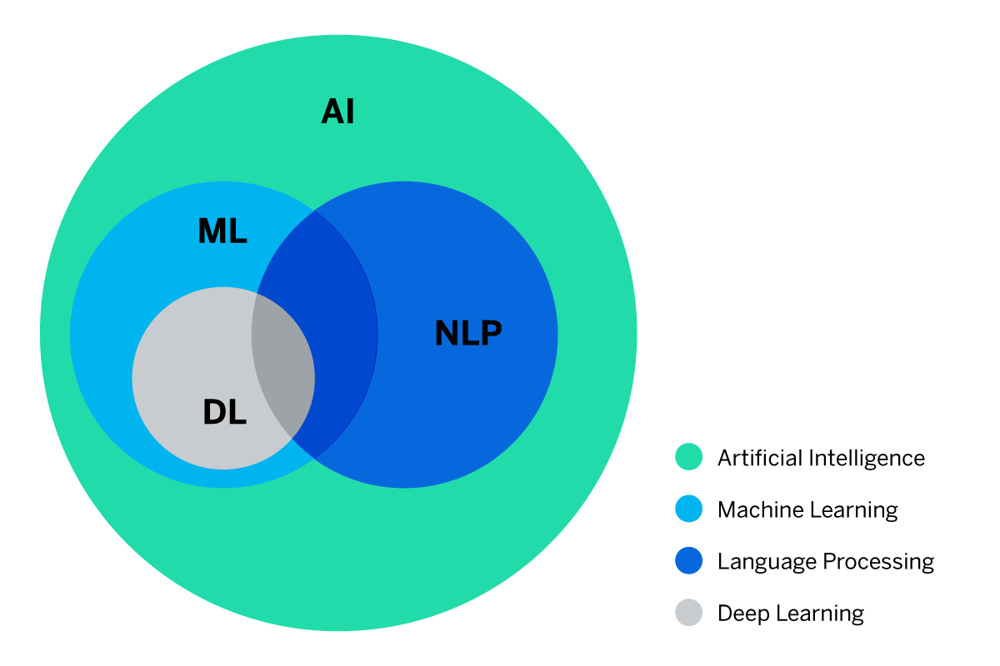Steps 1-4
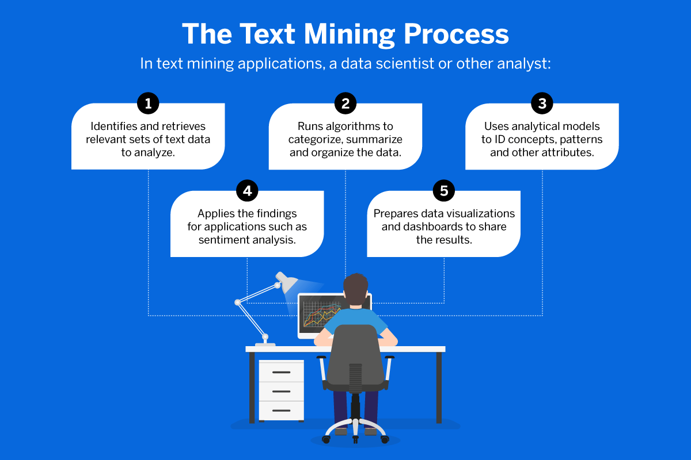Example: 10-K
- A report filed once per fiscal year with the SEC
- Describes company's financial situation and circumstances
- Sections with text:
- Item 1 - Business
- Item 1A - Risk Factors
- Item 7 - Management Discussion & Analysis
- Item 8 - Notes of Financial Statements
Other Sources
- 8-K A report filed to to announce major events that shareholders should know about
- SEC EDGAR Database
- Press Releases
- Earnings conference call transcripts
- Research paper repositories
- Analysts' reports
- Other company databases
Preprocessing
Tokenization
- Segment a text into "tokens"
- Units of pre-determined length
- Word pieces
- Sentences
- Paragraphs
- Split based on delimiters
- Spaces
- Tabs
- Conjunctions
- Specific preselected words
- The set of identified tokens is called a dictionary
Filtering
- Removal of stop words 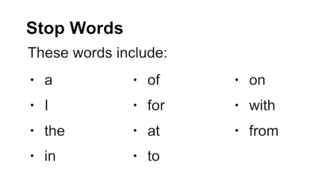
- Can remove noise from data
Stemming
- Segment a text into units or "tokens" of pre-determined length
- Convert variations of same word to word stem
- Coarse stemming methods remove prefixes and affixes 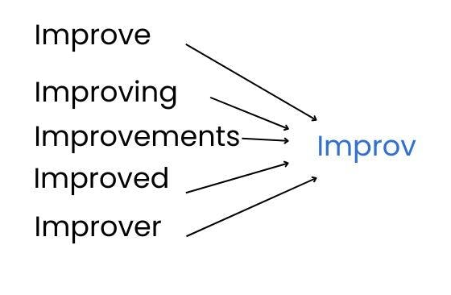
Lemmatization
- Convert variations of words to "lemma"
- More complex, uses Part of Speech labels for each token
- nouns, verbs, adjectives, adverb, etc.
- Verbs transformed into infinite tense, plural nouns reversed to singular 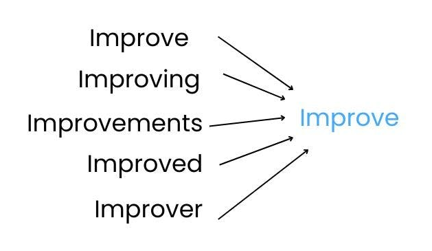
Transformation Approaches
Bag of Words
- Change text into a list of word counts
- Token frequencies can be normalized to account for document length
- Produces a "Term Document Frequency Matrix" 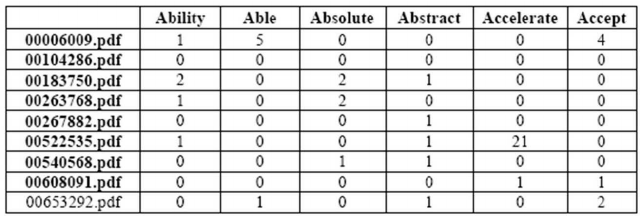
- Drawbacks:
- You end up with a lot of columns (sparse matrix)
- Only takes token frequencies into account
- Ignores order, interdependencies, and context
Vector Space Models
- Represent a document as an n-dimensional vector of token weights
- Weight can be frequency, or binary value indicating if term is present
- For example: [0.1, -0.4, 0.5, 0.9, -0.2, … ] 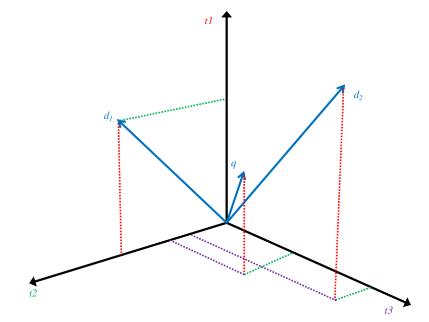
Method #1: Classification
Classification
- AKA 'categorization'
- Uses labeled data to train model
- A model learns to assign labels (classes) to new text fragments
- Subcategories:
- Topic classification
- Sentiment analysis
Naïve Bayes Classifier
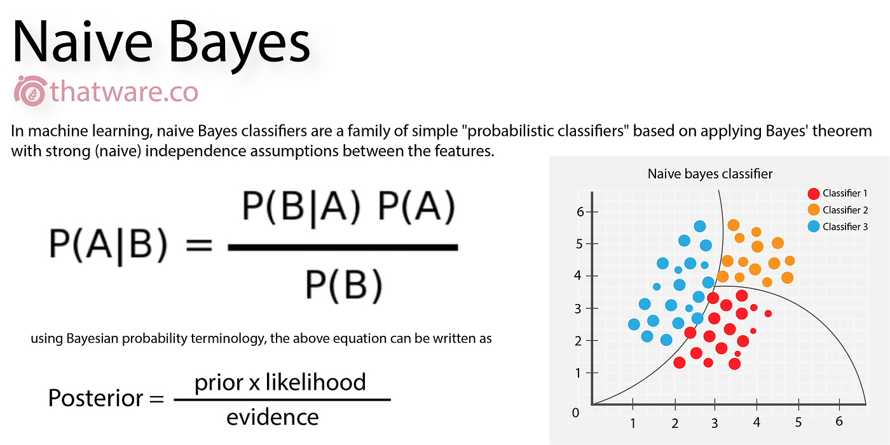- Use a set of labelled texts to train a classification model
- Determines probability of a label given a set of conditions
- Generally easy and quick but inaccurate
- Assumes probability of word being present is independent and equally important
Decision Trees

- Uses a set of rules, and uses consecutive criteria to classify a new text
- Fast and scalable, better than Naïve Bayes classifier but still relatively imprecise
- A bunch of them together is called a "Random Forest"
- Verdicts of many uncorrelated trees combined to choose best label
Support Vector Machines

- Uses 'hyperplanes' in the space of document vectors as boundary between different labels
- Maximizes their distance (‘margin’) to the nearest instances of the labels they are supposed to separate
- New texts are classified based on their vector representations’ positions relative to the hyperplanes
Sentiment Analysis
- Determines the overall sentiment value of a text
- Can be considered the 'tone' of a text
- Positive vs. negative (and sometimes neutral)
- Uses predetermined (general or context-specific) dictionaries or word lists that connect words to their tone
- General Inquirer, Diction, or LIWC
Prediction of performance
- Positive, negative or neutral tone of management communications can reveal management’s predictions of future performance
- Positive word connotations in earnings press releases and earnings conference calls has been linked to:
- Higher ROA
- Higher short-term stock returns
- greater future operational performance
- Negative tone in media coverage has been linked to:
- lower stock returns
- lower earnings
- higher stock market volatility
- higher stock market volatility
Example paper
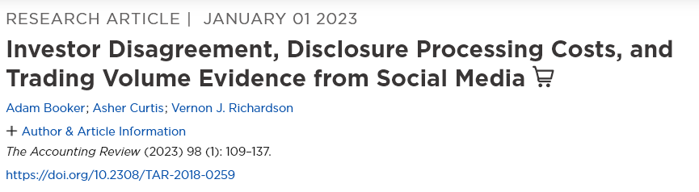
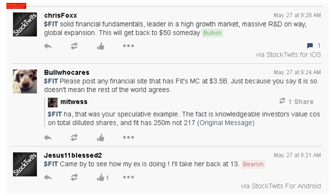
View articleMethod #2: Clustering
Clustering
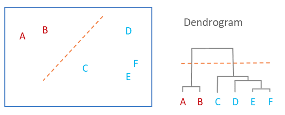- Aims to gather text collections whose members are highly similar to each other
- Categorizes text fragments without using predefined labels which allows new associations between documents to be uncovered
- Similarity Measures
- K-means clustering
- Latent Dirichlet Allocation (LDA)
K-means

- Uses unlabeled, unclassified data
- Assigns data points to one K cluster using distance from the center of the cluster
- Starts randomly assigning cluster centroids, each data point assigned to cluster, new cluster centroids are assigned, process runs iteratively
Latent Dirichlet Allocation

- Identifies latent structures in unstructured text
- You decide the number of topics to be identified and the number of words that can be used to characterize a topic
- The LDA algorithm looks at co-occurrences to identify the most prominent topics among the words
- Requires interpretation to derive a meaningful topic label
Fraud detection
- Cosine similarity metric can be used to define ‘abnormal disclosure’ as the deviation between the MD&A word distribution vector and the average word usage vector of non-fraudulent industry peers
- You can track the evolution of similarity of a company’s year-to-year annual reports
- Can expose an incongruity in its reporting activities in a particular period of time
- Incongruity might in turn be attributable to fraudulent activities
- A ‘Fraud Similarity Score’ can uncover fraud cases by calculating the cosine similarity between a firm’s abnormal disclosure and the average abnormal disclosure vector of firms previously involved in SEC AAER enforcement actions
Example paper
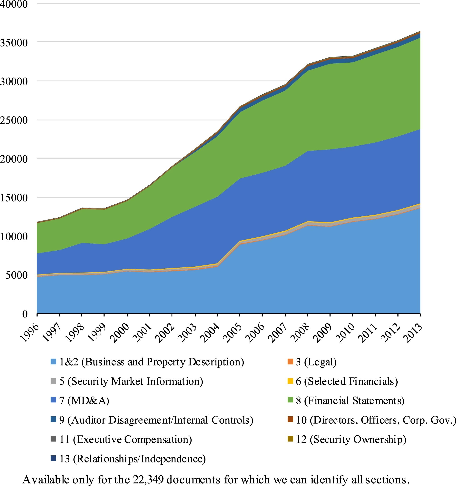
View articleCosine Similarity
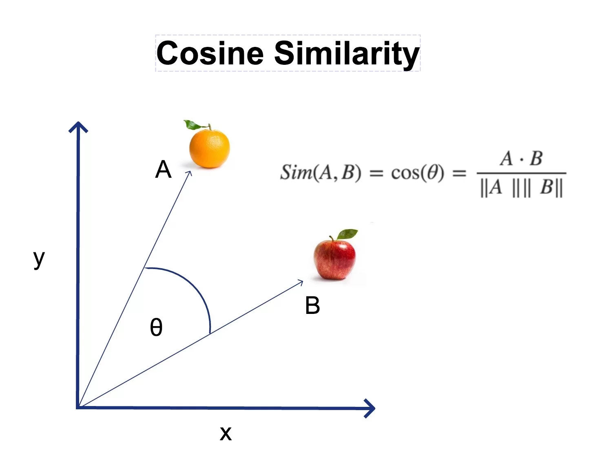Jaccard Similarity
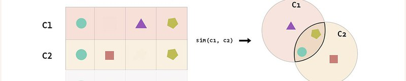Example Study
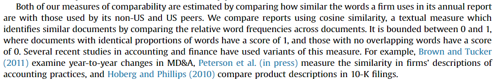
View articleInformation extraction
Information extraction
- you provide a pre-defined list of words or expressions of interest
- Like a 'targeted search' for the predefined list and highly related words or phrases can be identified in a set of text corpora
- Terms related to certain types of risk
- Litigation risk
- Going-concern risk
- Fraud risk
- Targeted searches for 'entity recognition'
- Highlight any references to a person, company or other entity under consideration
Example Study
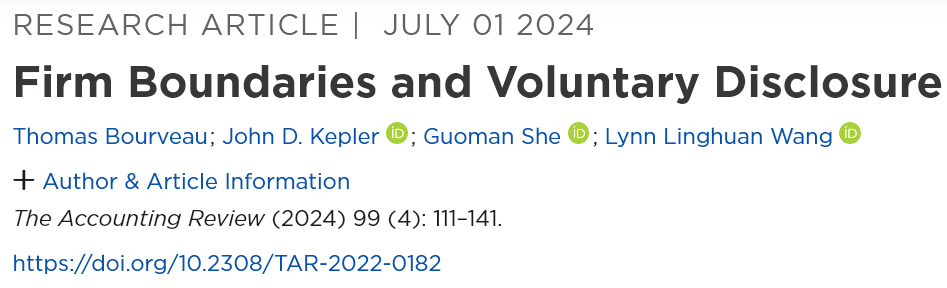
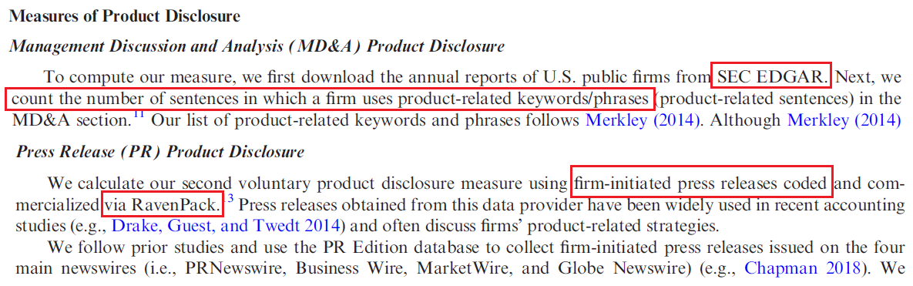
View articleText evaluation
Text evaluation
- Texts can be evaluated on objective aspects like readability
- Readability measures:
- Fog Index
- Disclosure quantity
- LM PE index
- Bog index
- A readability index is designed to measure the effort required for a reader to process a text and understand its intended message
- Accounting reports that are difficult to interpret could indicate intentional information obfuscation by a company’s management and low user-friendliness
Readability Measures
- Fog Index
- Uses the SEC plain English guidelines checking for ‘plain English violations’
- Long sentences and words counting three or more syllables are considered to be indicators of low text readability
- Disclosure quantity
- Looks at the number of words in a text
- Also sometimes measured using the size of a file containing a text
Fraud detection
- Examining content-related features of annual reports can be applied to fraud detection
- You can identify early and advanced stages of fraud using certain simple surface, or deeper linguistic features
- Percentage of sentences in active vs. passive voice
- Readability index
- Standard deviation of sentence length
- Perhaps fraudulent managers tend to write more often in passive voice, in order to dissociate themselves from the ongoing situation
Readability Measures
- LM PE index
- Also uses the SEC plain English guidelines checking for ‘plain English violations’
- Long sentences, complex words, passive verb forms, and legal terms
- Bog Index
- Covers all SEC plain English guidelines, such as the avoidance of passive voice, superfluous words, unnecessary detail and complex words
- Word complexity determined using a list of over 200,000 words
- Rated on familiarity (i.e. obscurity, technicality) and precision
- Takes into consideration words and constructs that could deliberately increase readability
- May be more of a measure of writing style, rather than a measure of readability
Example Study
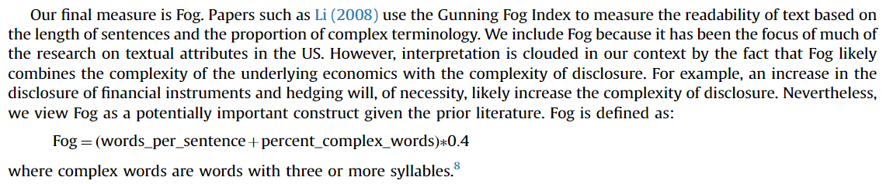
Accounting application:
Increase user-friendliness
- Accounting documentation and annual reports include additional disclosures that are becoming progressively more extensive and complex
- User-friendliness and accessibility of the information in accounting text documents could equally be increased through certain textual aspects
- Summarization
- Topic detection
- Automatic information extraction
- Integrate complementary qualitative and quantitative information
- Quality of corporate communication impacts on the speed and effectiveness of investors’ decision-making so it may improve future stock returns and earnings
Discussion